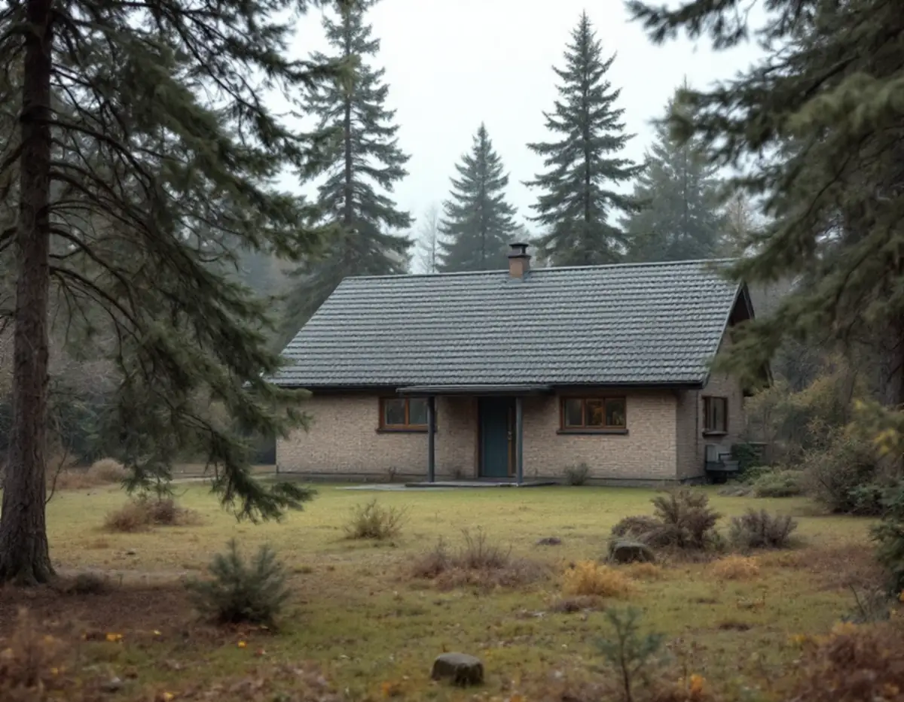
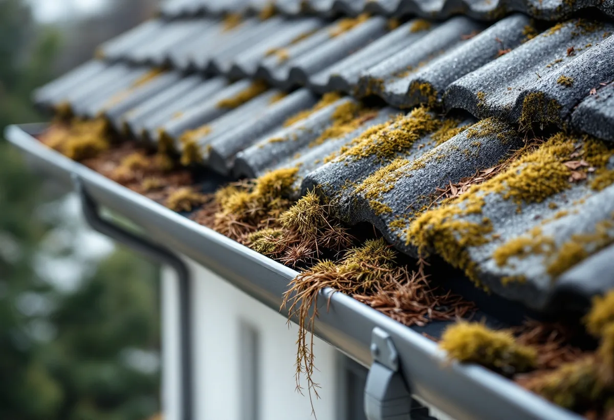

Besök och genomgång av huset
Vi tittar på takets form, kupor, skorstenar och vinden, och på hur träden runt huset påverkar taket.
En takrenovering i Sollentuna gäller ofta en äldre villa i någon av villastäderna kring Norrviken, Tureberg och Edsviken, eller ett radhus från 1960–80-talet. Vi byter underlag, läkt och plåt, behåller pannorna när de håller och ser till att taket passar in i ett område där kommunen vill bevara villastadens karaktär.

Sollentuna växte fram längs järnvägen mellan Stockholm och Uppsala, som byggdes 1866. Enligt kommunens översiktsplan började man bygga småhus och villor i början av 1900-talet, när stationer anlades i Tureberg och Norrviken, och kommunen vill bevara den prägel av villastad som växte fram under seklets första hälft.
I Norrviken köpte AB Norrvikens villastad Kista gårds marker 1906 och styckade dem till egnahemstomter. Under 1930–40-talet tillkom egnahemsvillor i de södra delarna, och från 1960-talet till början av 1980-talet byggdes större radhusområden i sydväst och norr. I Tureberg styckade Clas Östberg 1910 upp mark mellan stationen och Edsviken i 61 villatomter.
I Edsberg sträcker sig det äldre villaområdet Landsnora österut längs Edsviken, medan Kvarnskogen är ett nyare område med främst radhus och Edsängen en blandning av radhus och villor mot Täby.

På sekelskiftesvillorna är taken branta och har ofta frontespiser, kupor och flera skorstenar. Där är det sällan själva täckningen som först gör att taket läcker. Det är plåten runt kupor och skorstenar, ränndalarna och ett underlag som lagts om för länge sedan, om alls.
På radhusen från 1960–80-talet brukar underlagspappen och läkten vara från byggåret. Eftersom längorna har samma ålder får flera grannar ofta samma behov inom några år, vilket gör det lättare att planera omläggningen tillsammans.
Kommunen beskriver Edsviken som en havsvik och Norrviken som en av kommunens sjöar, och översiktsplanen lyfter den gröna lummigheten i villastaden som något som ska värnas, med uppvuxna träd som ska ersättas om de tas bort. För taken betyder det mycket skugga, löv och barr i rännorna och takfall som håller kvar fukt.
Vi tar därför med avvattningen i bedömningen och ser över takfall som ligger i skugga större delen av dagen. Ett mossigt men i övrigt friskt tak kan klara sig med taktvätt en tid till, medan ett tak där mossan lyft pannorna behöver läggas om.
Sedan den 1 december 2025 krävs normalt inget bygglov för att byta taktäckningsmaterial eller kulör på en- och tvåbostadshus, enligt Boverket. Undantag gäller vid skyddsbestämmelser eller utökad lovplikt i detaljplanen, områdesbestämmelser och särskilt värdefulla byggnader och områden. Höjs taket kan det räknas som tillbyggnad, så stäm av med kommunen innan takets form eller höjd ändras.
Sollentuna skriver på sidan om att byta takmaterial att lov krävs om fastigheten ligger i ett kulturhistoriskt värdefullt område, och att vissa detaljplaner styr hur tak- och fasadmaterial ska vara utförda. Den nuvarande kulturmiljöplanen är från 1993 med tillägg 2002, och enligt kommunen tas en ny, digital plan fram som ska antas våren 2027.
Fram till dess kan det vara oklart om just ditt hus räknas som värdefullt. Kommunen hänvisar på sidan om kulturhistoriska byggnader till ett kartlager med områden i kulturmiljöplanen och ber dig kontakta dem om du är osäker. Översiktsplanen nämner till exempel Norrvikens villastad, Väderholmen och Skansen, där områdenas karaktär ska behållas.
Översiktsplanen säger att radhus och sammanhållna grupper av hus kan förändras, men att varje förändring ska bidra positivt till helheten i gruppen. Byter ett hus i längan till en annan panna eller kulör syns det tydligt, så det är klokt att stämma av med grannarna innan materialet beställs.
Är du osäker på om ett materialbyte kräver lov kan du enligt kommunen söka ett frivilligt bygglov, som ger ett beslut på att åtgärden uppfyller kraven. Det tar längre tid, men kan vara värt det på en äldre villa i ett område med tydlig karaktär. Läs också om bygglov vid takbyte.
På en äldre villa tar vi ner pannorna eller plåten, kontrollerar råsponten och lagar den, och lägger ny underlagspapp och ny läkt. Plåten kring kupor, frontespiser och skorstenar görs om, liksom ränndalar, fotplåt och vindskivor. Är det ett plåttak bedömer vi om det räcker att byta detaljerna och måla, eller om det behöver läggas nytt.
På radhusen läggs betongpannorna tillbaka om de är hela, och vi kontrollerar att takfoten ventilerar så att vinden hålls torr. Hängrännor och stuprör byts när de är lika gamla som taket. Hur vi arbetar i kommunen beskrivs på sidan om takläggare i Sollentuna, och metoden i stort under takrenovering.
Vi tittar på takets form, kupor, skorstenar och vinden, och på hur träden runt huset påverkar taket.
Vi går igenom detaljplanen och om huset kan beröras av kulturmiljöplanen, och om ett frivilligt bygglov är värt att söka.
Ställningen placeras så att träd och trädgård skonas, och grannar i längan informeras om arbetet.
Pannor eller plåt tas ner, råsponten lagas och ny underlagspapp och läkt läggs.
Plåt kring kupor och skorstenar, ränndalar, takfot och rännor görs om eller byts.
Pannorna läggs tillbaka eller nytt material monteras, och vi går igenom resultatet med dig.
Rotavdraget är 30 procent av arbetskostnaden, högst 50 000 kr per person och år, och ROT och RUT får tillsammans vara högst 75 000 kr. Material och resor ger inget avdrag. Vi drar av beloppet direkt på fakturan, och är ni två ägare kan ni dela upp avdraget mellan er, enligt Skatteverket.
Lägger flera grannar i en radhuslänga om sina tak samtidigt gör var och en avdraget för sitt eget hus, och avdraget gäller bara den som äger huset medan arbetet pågår. Mer finns under ROT-avdrag för takarbete.
Kostnaden för en takrenovering i Sollentuna styrs mest av takets form. En sekelskiftesvilla med frontespis, kupor och flera skorstenar kräver betydligt mer plåtarbete än ett rakt sadeltak på ett radhus. Hur mycket av täckningen som kan återanvändas, om råsponten behöver lagas och hur ställningen kan placeras bland träden avgör resten. Läs mer om vad en takrenovering kostar eller räkna på ditt tak i kalkylatorn.
Takbyte, besiktning och plåtarbeten.
Takläggare i Sollentuna →Så fungerar en omläggning.
Takrenovering och takomläggning →Det här styr priset.
Vad kostar en takrenovering? →Räkna på takytan och ROT.
Takbyte-kalkylator →Jakobsberg, Viksjö och Kallhäll.
Takrenovering i Järfälla →Näsbypark, Viggbyholm och Gribbylund.
Takrenovering i Täby →Bollstanäs, Vilunda och Runby.
Takrenovering i Upplands Väsby →